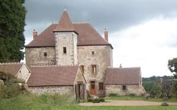
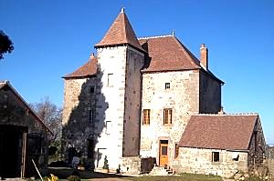
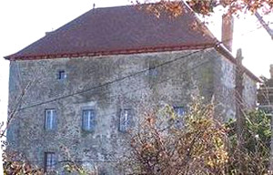
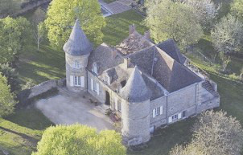
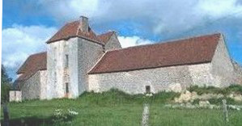
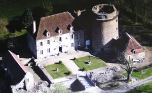
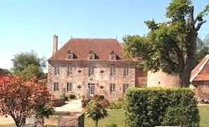
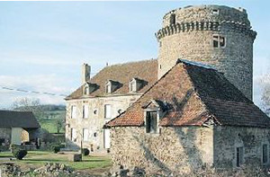
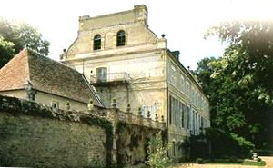

Recensement Jean-Claude Truffet
| Département | 03 — Allier |
| Canton | Montmarault |
| Commune | Beaune-d`Allier |
| Type d'édifice | Château |
| Période d'origine | XV-XVIII |









Plusieurs châteaux à la Beaune d'Allier, la Faye du XV-XVIIe siècle, les Guillaumets du XIV-XIXe siècle cantonné de tours, de Mazeau du XVIIe siècle tour vestiges, de Salbrune du XIII-XVe siècle avec tour, et de Villars du XV-XIXe siècle. La FAYE,siège d'une justice seigneuriale, les premières mentions connues des sieurs de la Faye concernent, en 1443, un Jean d'Avenier, puis un Antoine Roussin, écuyer, dans un document testamentaire daté de 1498. En 1599 Jean Louis de la Mousse est seigneur de la Faye. Au dernier membre de la lignée de la Mousse succède son gendre, Amable de Montaignac, en 1759. SALLEBRUNE; au XVe siècle possession de la famille de Beaucaire, en 1595 Isaac de Beaucaire seigneurs écuyer. La seigneurie est acquise par César de Bressolles qui épouse en 1640 Françoise de Chateaubodeau et la revend en 1680 à la famille Dubouis, qui passera ensuite aux Colasson. GUILLAUMETS; Les Guillaumets furent la résidence de fonctionnaires d'Octroi et de Gabeloux. VILLARS, la seigneurie comprenait le castel fort, dressé sur un rocher, trois domaines et le bois de Villard. En 1322, Hugonin de Moulins tient le fief de Villers, châtellenie de Murat. De nombreux aveux postérieurs concernent l'hostel, terre et seigneurie de Villards. En 1548, Geoffroy de Mollins, écuyer, seigneur de Villards, signe une reconnaissance par laquelle il s'engage à payer, une redevance de cens au membre de Bussières Jérusalem, pour sa terre du Soupt, paroisse de Beaune, dépendant de l'hôpital et chapelle d'Augières. Vers 1650, le domaine de Villars est acquis par René de Saint-Martin, seigneur du Mazeau, terre voisine. Au XVIIIe siècle Villards appartient à la famille Desbouis de Sallebrune. Il est à cette époque, très dégradé et occupé par des métayers. Ses vestiges passeront ensuite à la famille Siramy.
la Faye a gardé, de son aspect médiéval, une tour en ruine flanquée à l'angle d'un bâtiment. Les constructions étaient installées sur une plateforme rocheuse située en position dominante. une seconde tour, une large pièce d'eau, des bâtiments dispersés et la maison de maître.
Sallebrune du XVe siècle, à l'origine, ensemble de bâtiments fortifiés ordonnés autour d'une cour quadrangulaire et entourés de fossés en eau. Cette disposition initiale transparaît encore, mais l'enceinte médiévale a quasiment disparu. Le fossé sud est franchi par un pont maçonné qui donne accès à la cour d'honneur autour de laquelle s'ordonne divers bâtiments : une tour ronde du XVe siècle ; un corps de logis du XVIIe; en retour d'équerre, et une aile de communs en partie ruinée. La tour possède un escalier en vis . Le couronnement conserve ses corbeaux formant mâchicoulis. Le corps de logis, barlong, se compose d'un rez-de-chaussée légèrement surélevé, d'un étage et de combles. Une travée en léger retrait raccorde l'aile du logis à la tour. La tour médiévale correspond à un style peu représenté en Bourbonnais. Il est remarquable par son donjon; une large et haute tour ronde des XIIIe et XVe siècles. Guillaumets, deux châteaux: celui de Sainte Foy, centre primitif d'un terroir rayonnant et circulaire, et qui paraît être un ancien château fort réaménagé. Il a conservé deux tours d'angle des XIVe et XVe siècles et reste couvert d'un toit à la Mansart. On y remarque une belle clé de porte et un fronton de lucarne armorié. Celui de la Celle, à constructions compliquées, adjointes à une tour carrée que l'on pense dater du XIIIe siècle. L'ensemble des constructions a été largement réaménagé aux XVIIe et XVIIIe siècles.
Villars Le château est le reste d'une vieille construction féodale à solides appareillages d'angle, aux murs épais, semblable à un donjon carré, et entourée d'un jardin clos de murs d'enceinte, les fossés ont disparu.
Famille de Geoffroy de Mollins"
Château de la Faye, de Guillermets, de Mazeau, de Salbrune et de Villars